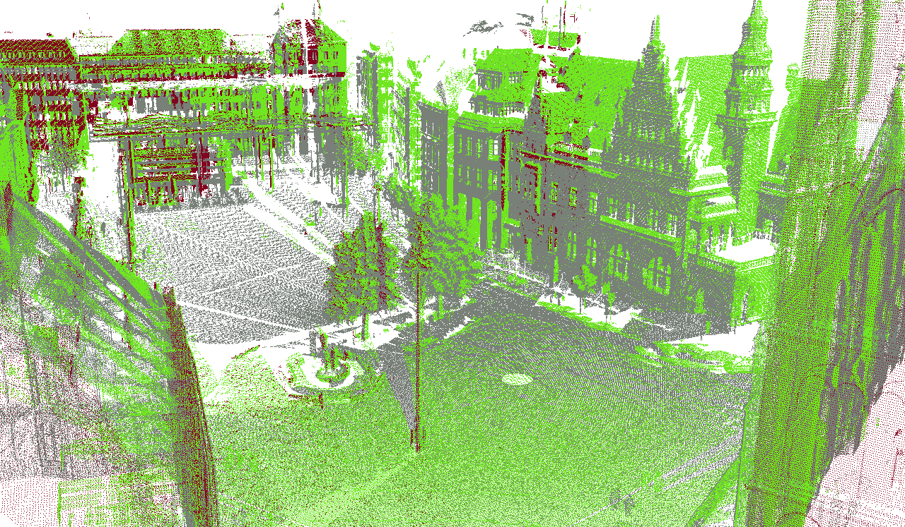
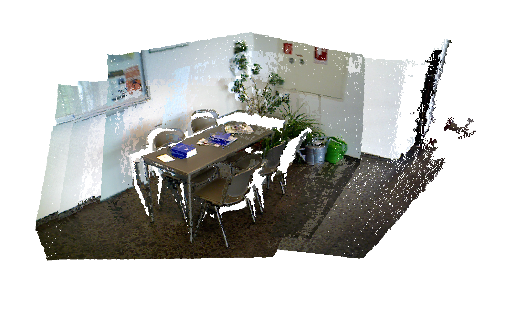
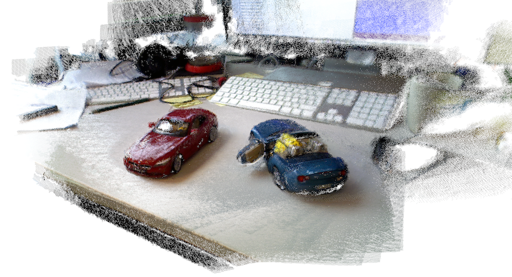

PCL RAS Registration Tutorial

Datasets
Large-scale 3D Laser Scans

Subsampled Bremen dataset
For more datasets, please visit the osnabrueck webpage:Subsampled Bremen dataset
Sparse Low-resolution 3D Laser Scans

Selected Dirk MAV dataset
For more fancy MAV stuff, visit Dirk's page:Bonn
Sequences of RGB-D Images
 
There are numerous datasets available online. Ours:Car dataset
Sitting table dataset
For more datasets, please visit the pcl dataset webpage, where the most popular 3D datasets are indexed:here
Source Code
TODO: * add some more details about what version of PCL is needed * tested on mac, linux, windows * requirements: pcl and its dependencies (link to how to compile pcl page)Large-scale 3D Laser Scans
Sparse Low-resolution 3D Laser Scans
Sequences of RGB-D Images
More Examples
TODO: Take stuff from Dirk's page, generate more figures?